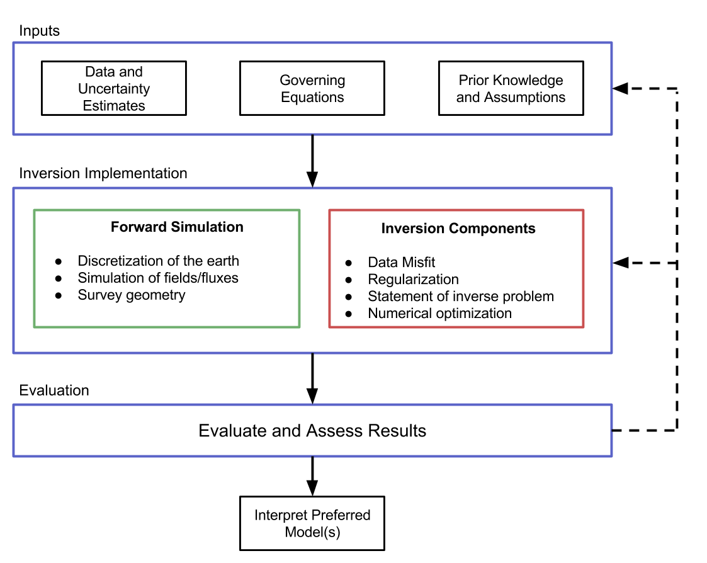
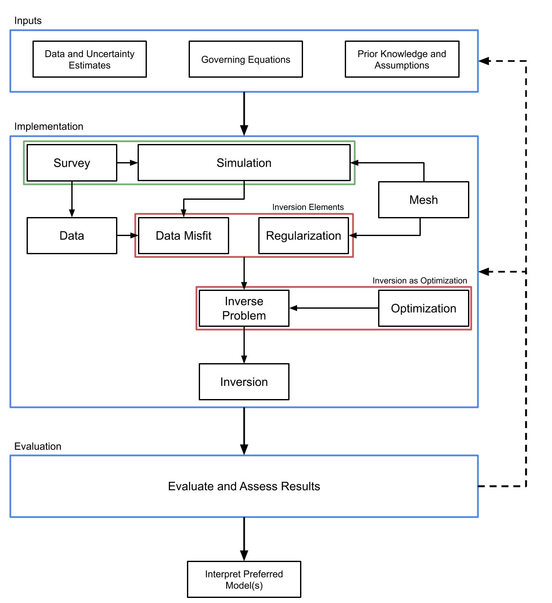

Why SimPEG?#
Our essential functions as researchers are the pursuit and dissemination of knowledge through research and education. As scientists we seek to find models that reproduce the observations that we make in the world. In geophysics, we use inverse theory, hence iterative forward modeling, to mathematically create models of the earth from measured data. It is a difficult problem with many moving pieces: physics, discretization, simulation, regularization, optimization, computer science, linear algebra, geology. Exploring each of these disciplines can take a career, if you are so inclined, but as geophysicists we care about the combination: how to pull these disciplines together to answer our questions. This is the first problem we hope to help solve: to create a toolbox for the geophysicist that allows you to work at a high level and keep your geophysical question in focus. However, a toolbox is not enough. The research questions that we are interested in surround the integration of information to make better decisions.
We believe that the feedback loops in the geosciences could use some serious work. For example, collect multiple data-sets from the same field area (geology, seismic, electromagnetics, hydrogeology), process the data separately, and then reconvene with your multidisciplinary team. You may be rather surprised (or not) that the everyone has a (completely!?) different model. Dissonant at best, but often conflicting in the details. Therein lies the second problem: how do we integrate these geoscience fields? Not by force or even by default, but at least to have the option of quantitative communication and built in feedback loops. What we require is an implementation that is inherently and unequivocally modular, with all pieces available to manipulation. Black-box software, where the implementations are hidden, obfuscated, or difficult to manipulate, do not promote experimentation and investigation. We are working on a framework that exposes the details of the implementation to the geophysicist in a manner that promotes productivity and question based interrogation. This framework can be easily extended to encompass many geophysical problems and is built with the inverse problem as the fundamental goal.
There are some geophysical methods where you can make interpretations about the subsurface from (processed) data. For example, geologic contacts can be interpreted from seismic data. Similarly in potential fields data, filtering techniques are often applied to magnetic data and used to interpret geologic maps where rock exposure is limited. In many cases though, the geologic settings and governing physics are sufficiently complex and the data cannot be directly interpreted to construct a geologic model. This is where inversion techniques, which make use of the ability to simulate the governing equations, are a powerful tool for interpretation. The way this data is interpreted is by creating a geologically feasible starting model, calculating the response of that starting model, and comparing the calculated responses to the measured data. Depending on the differences between the two we update our model according to some defined rules, and repeat the whole process until a termination criterion is reached. This iterative modeling to generate a model whose response matches the measured data as good as possible is what geophysicists call inversion of data. It is important to note that in this process we only adjust our model of the subsurface and never touch the data, which is very distinct to data-processing methods.
The future we see is a mix of tools that span our disciplines, and a framework that allows us to integrate many different types of geophysical data so that we can communicate effectively and experiment efficiently. A toolbox combined with a framework that allows you to solve your own problems, and creates opportunities for us to work together to better image and understand the subsurface. What we are building is called SimPEG, simulation and parameter estimation in geophysics. We are building it in the open. We are testing it. Breaking it. Building it. Fixing it. Using it. If you believe, like we do, that geophysics can be more innovative and informative in the open and that these tools are necessary and invaluable in education as well as research, then you should get in touch. There is a lot of work to do!
The Big Picture#
Defining a well-posed inverse problem and solving it is a complex task that requires many components that must interact. It is helpful to view this task as a workflow in which various elements are explicitly identified and integrated. The figure below outlines the inversion components that consists of inputs, implementation, and evaluation. The inputs are composed of the geophysical data, the equations which are a mathematical description of the governing physics, and prior knowledge or assumptions about the setting. The implementation consists of two broad categories: the forward simulation and the inversion. The forward simulation is the means by which we solve the governing equations given a model and the inversion components evaluate and update this model. We are considering a gradient based approach, which updates the model through an optimization routine. The output of this implementation is a model, which, prior to interpretation, must be evaluated. This requires considering, and often re-assessing, the choices and assumptions made in both the input and implementation stages.
{kind=link}
A Comprehensive Framework#
There are an overwhelming amount of choices to be made as one works through the forward modeling and inversion process (see figure above). As a result, software implementations of this workflow often become complex and highly interdependent, making it difficult to interact with and to ask other scientists to pick up and change. Our approach to handling this complexity is to propose a framework, (see below), that compartmentalizes the implementation of inversions into various units. We present it in this specific modular style, as each unit contains a targeted subset of choices crucial to the inversion process.
{kind=link}
The process of obtaining an acceptable model from an inversion generally
requires the geophysicist to perform several iterations of the inversion
workflow, rethinking and redesigning each piece of the framework to ensure it
is appropriate in the current context. Inversions are experimental and
empirical by nature and our software package is designed to facilitate this
iterative process. To accomplish this, we have divided the inversion
methodology into eight major components (See figure above). The
discretize.base.BaseMesh class handles the discretization of the
earth and also provides numerical operators. The simpeg.survey.BaseSurvey
class handles the geometry of a geophysical problem as well as sources and
receivers. The simpeg.simulation.BaseSimulation class handles the
simulation of the physics for the geophysical problem of interest. The
simpeg.simulation.BaseSimulation creates geophysical fields given a
source from the simpeg.survey.BaseSurvey, interpolates these fields to
the receiver locations, and converts them to the appropriate data type, for
example, by selecting only the measured components of the field. Each of these
operations may have associated derivatives with respect to the model and the
computed field; these are included in the calculation of the sensitivity. For
the inversion, a simpeg.data_misfit.BaseDataMisfit is chosen to capture
the goodness of fit of the predicted data and a
simpeg.regularization.BaseRegularization is chosen to handle the non-
uniqueness. These inversion elements and an Optimization routine are combined
into an inverse problem class simpeg.inverse_problem.BaseInvProblem.
simpeg.inverse_problem.BaseInvProblem is the mathematical statement that
will be numerically solved by running an Inversion. The
simpeg.inversion.BaseInversion class handles organization and
dispatch of directives between all of the various pieces of the framework.
The arrows in the figure above indicate what each class takes as a primary
argument. For example, both the simpeg.simulation.BaseSimulation and
simpeg.regularization.BaseRegularization classes take a
discretize.base.BaseMesh class as an argument. The diagram does
not show class inheritance, as each of the base classes outlined have many
subtypes that can be interchanged. The discretize.base.BaseMesh
class, for example, could be a regular Cartesian mesh
discretize.TensorMesh or a cylindrical coordinate mesh
discretize.CylindricalMesh, which have many properties in common. These
common features, such as both meshes being created from tensor products, can
be exploited through inheritance of base classes, and differences can be
expressed through subtype polymorphism. Please look at the documentation here
for more in-depth information.
Citing SimPEG#
There is a paper about SimPEG, if you use this code, please help our scientific visibility by citing our work!
Cockett, R., Kang, S., Heagy, L. J., Pidlisecky, A., & Oldenburg, D. W. (2015). SimPEG: An open source framework for simulation and gradient based parameter estimation in geophysical applications. Computers & Geosciences.
BibTex:
@article{cockett2015simpeg,
title={SimPEG: An open source framework for simulation and gradient based parameter estimation in geophysical applications},
author={Cockett, Rowan and Kang, Seogi and Heagy, Lindsey J and Pidlisecky, Adam and Oldenburg, Douglas W},
journal={Computers \& Geosciences},
year={2015},
publisher={Elsevier}
}
License#
The MIT License (MIT)
Copyright (c) 2013-2024 SimPEG Developers
Permission is hereby granted, free of charge, to any person obtaining a copy of this software and associated documentation files (the “Software”), to deal in the Software without restriction, including without limitation the rights to use, copy, modify, merge, publish, distribute, sublicense, and/or sell copies of the Software, and to permit persons to whom the Software is furnished to do so, subject to the following conditions:
The above copyright notice and this permission notice shall be included in all copies or substantial portions of the Software.
THE SOFTWARE IS PROVIDED “AS IS”, WITHOUT WARRANTY OF ANY KIND, EXPRESS OR IMPLIED, INCLUDING BUT NOT LIMITED TO THE WARRANTIES OF MERCHANTABILITY, FITNESS FOR A PARTICULAR PURPOSE AND NONINFRINGEMENT. IN NO EVENT SHALL THE AUTHORS OR COPYRIGHT HOLDERS BE LIABLE FOR ANY CLAIM, DAMAGES OR OTHER LIABILITY, WHETHER IN AN ACTION OF CONTRACT, TORT OR OTHERWISE, ARISING FROM, OUT OF OR IN CONNECTION WITH THE SOFTWARE OR THE USE OR OTHER DEALINGS IN THE SOFTWARE.